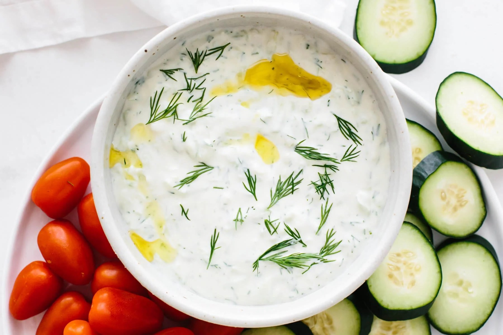

Tzatziki Recipe

What is Tzatziki?
Tzatziki is a rich, creamy mixture of Greek yogurt, cucumber, garlic, and dill, among a few other ingredients, that pairs perfectly with spanakopita or can be eaten alone with naan bread or even tortilla chips! It serves as a refreshing, healthy, protein rich dip, perfect for snacking on. Just watch out for the garlic breath!
Ingredients
- 1 small cucumber, shredded and drained
- 1-1/2 cups plain full-fat Greek yogurt (Fage 5% recommended)
- 2 large garlic cloves, finely minced
- 2 tablespoons extra virgin olive oil
- 1 tablespoon white vinegar
- 1/2 teaspoon kosher salt
- 1 teaspoon dried dill (or 1 tablespoon fresh minced dill)
Instructions
- Combine your yogurt, garlic, oil, vinegar, salt, and dill in a quart size bowl.
- Grate your cucumber with the skin on, and either drain overnight in a sieve or squeeze dry the cucumber by hand. Once the excess water has been removed, combine the cucumber with your yogurt mixture.
- Your tzatziki can be eaten immediately, though it's recommended you let it rest overnight so that the flavors can infuse with the yogurt. Enjoy with spanakopita and naan bread, or as a protein rich snack with tortilla chips!